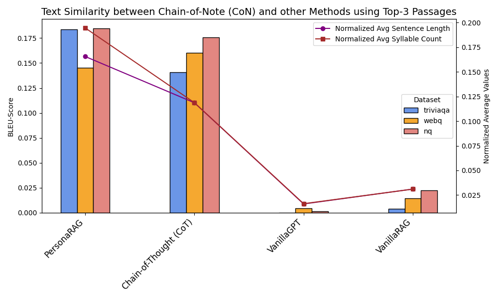
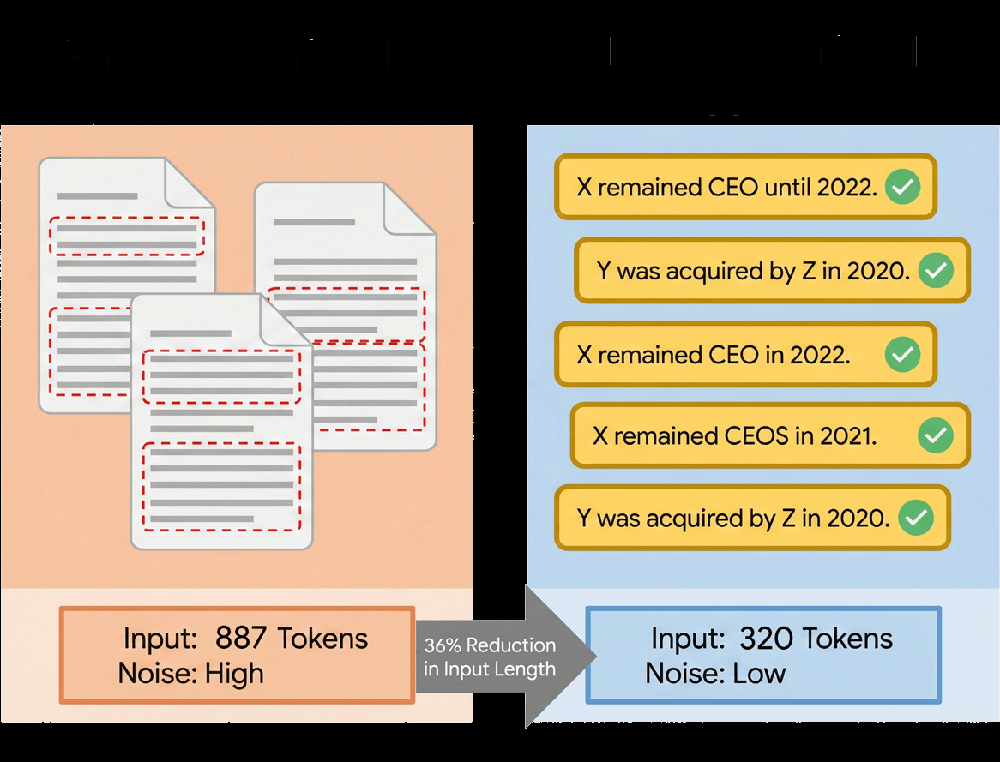

PDF
<!-- .slide: class="title-slide" --> ## OpenWebSearch.eu as a Data Source for AI Prof. Dr. Michael Granitzer Chair of Data Science, University of Passau Coordinator OpenWebSearch.eu <div> TPC26 Satellite Event · Garching · 2026-06-02 </div> Notes: The talk is not mainly about OpenWebSearch.eu. It uses OWSEU as a concrete infrastructure example for a larger argument: the web is becoming a reusable data layer for AI systems — for training, retrieval memory, agent actions, and behavioral traces. --- ## Web Search & Web Data - a Critical Infrastructure <div class="grid-2-1 gap-lg"> <div class="column"> - A **critical infrastructure** for society — and now for AI — comparable to satellite navigation - A **market oligopoly**: a handful of gatekeepers (Google, Microsoft, Baidu, …) control access to the web ### Consequences - **Reduced user choice** - **Dependence in the information space** - **Smaller researches and innnovators are locked out** </div> <div class="column">  </div> </div> <div class="takeaway"> How to enable researchers, innovators and smaller companies to utilise the web as **data resource** for training and fine-tuning AI systems and to develop **AI-based Search Systems** without massive investments in infrastructure? </div> Notes: Motivation: web search is critical infrastructure, but it is run as an oligopoly. For this talk the angle is not sovereignty for its own sake — it is access to the web as a scientific and operational *data resource*. If only a few players can read the web at scale, only a few can build on it. --- ## OpenWebSearch.eu <div class="c-info center"> Building an **Open Index of the Web** and an open infrastructure that lowers the cost for researchers, innovators, and companies to tap the web for **search, analytics, and AI**. </div> <div class="grid-2 gap-lg"> <div class="column"> ### Four objectives 1. **Open technology stack** — open pipelines for crawling, preprocessing, indexing 2. **Resource provision** — a network of providers on EuroHPC / AI Factories 3. **Added-value services** — dashboard, tools, data-access APIs 4. **Bootstrapping the ecosystem** — third-party calls, community, use-cases </div> <div class="column"> ### 14 core partners  <div class="tiny"> Uni Passau · LRZ · CERN · CSC · IT4I · DLR · TU Graz · Bauhaus-Uni Weimar · Radboud · Uni Leipzig · A1 Telekom · Open Search Foundation · NLnet · SUMA-EV — plus 16 funded third-party projects. </div> </div> </div> <div class="slide-citation"> Funded by Horizon Europe (Next Generation Internet programme). </div> Notes: One slide on who we are: mission, four objectives, the consortium of 14 research, NGO, and industry partners across Europe, funded under Horizon Europe NGI. Keep it brief — this is context, not the pitch. --- ## The Goal: An Open Web Index A **web index** is the data structure behind every search engine — fast, query-based access and ranking over web documents. <div class="c-info"> **Our proposition:** a collaboratively created, **open and transparent** web index, running on Europe's HPC centres and AI Factories. </div> <div class="figure-100">  </div> Notes: The goal is not to clone a commercial search engine, but to build shared, open infrastructure: an index anyone can reuse for datasets, retrieval, agents, and evaluation — on public European compute. --- ## Building the Index <div class="grid-2 gap-lg"> <div class="column small"> ### Federated HPC Workflow - Continuous Crawling on Cloud Partitions - Daily Batch HPC Workflows: WARC processing · indexing · semantic enrichment, running - Runs federated at **LRZ** (Garching) · **IT4I** (Ostrava) · **CSC** (Helsinki) ### Federated storage - Object Storage for Crawl Data - File Storage for Index Provivions ### Orchestration - LEXIS (Apache Airflow) orchestrates jobs across schedulers - stages data transfers, aligns daily output across all centers </div> <div class="column">  <div class="figure-credit"> LEXIS / Apache Airflow: federated OWI pipeline orchestration </div> </div> </div> Notes: Fast slide — HPC is the infrastructure backbone. The pipeline runs daily: crawl → WARC processing → indexing → semantic enrichment (embeddings). Each stage has a different bottleneck (network, I/O, memory/CPU, GPU). LEXIS (built on Apache Airflow) orchestrates the federated workflow across LRZ, IT4I, CSC, and CERN — handling job scheduling, data staging via DDI/iRODS, and aligning output. Federated storage means data and compute can meet at whichever site has capacity. The result: 1,507 TB crawled, 35 TB indexed, 884 GB dense embeddings — reusable public infrastructure. --- ## The Open Web Index Today <div class="grid-3-1 gap-lg"> <div class="column"> <video data-autoplay loop muted playsinline controls style="width:100%;border:1px solid #e0e0e0;border-radius:4px" poster="../../_assets/ows/screenshots/owi-dashboard-2605-poster.jpg" src="../../_assets/ows/screenshots/owi-dashboard-2605.mp4"></video> <div class="figure-credit"> OWI dashboard — live operational statistics. http://openwebindex.eu </div> </div> <div class="column small"> <div class="grid-2"> <div class="stat-card s-navy"> ### 1,507 TB data crawled </div> <div class="stat-card"> ### 35 TB Open Web Index </div> <div class="stat-card"> ### 1,834 public datasets </div> <div class="stat-card"> ### 284 WARC datasets </div> </div> <div class="c-positive"> Continuously refreshed — **+79 TB crawled and +95 datasets in the last month** alone. </div> </div> </div> <div class="slide-citation"> OWI dashboard, figures as of May 2026. </div> Notes: Results in numbers. Stress two things: the scale (over a billion objects, with structured entities and media as first-class citizens, not just documents) — and that this is about one month of data. The index is a living, refreshing resource. --- ## $OUR^2S$ Web Search Engine <div class="grid-3-1 gap-lg"> <div class="column"> <video data-autoplay loop muted playsinline controls style="width:85%;border:1px solid #e0e0e0;border-radius:4px" poster="../../_assets/ows/screenshots/ourrs-manufactruing-2605-poster.jpg" src="../../_assets/ows/screenshots/ourrs-manufactruing-2605.mp4"></video> </div> <div class="column small"> <div class="grid-1 small"> <div class="stat-card s-navy"> ### 2 Months of data 04/25 + 05/25 </div> <div class="stat-card s-navy"> ### 598.1M Pages </div> <div class="stat-card s-navy"> ### 453.4M Entities </div> <div class="stat-card"> ### 14 verticals documents · media · products · events · places · FAQs · Scholarly · Artefacts · Actions · Pages · Sites · Persons · Conversations · Courses </div> <div class="stat-card"> ### 0.04–3.6 s "manufacturing 3d" → 411k results </div> <div class="stat-card s-violet"> ### in-browser AI private Qwen3 summaries, ~400 MB </div> </div> </div> </div> <div class="c-positive small"> OUR²S turns the open index into a **working, AI-augmented search engine** — documents *and* structured entities, summarised privately in the browser. </div> <div class="slide-citation"> OUR²S (ourrs) live demo; search index snapshot April/May 2025. </div> Notes: OUR²S is the user-facing search engine over the Open Web Index, running on an April/May 2025 index snapshot. It demonstrates branch (ii): the index served as live search — documents and structured entities (products, events, places, FAQs) across six verticals, sub-second results, and an in-browser AI summary (Qwen3 0.6B, ~400 MB) that runs locally so queries stay private. The screencast shows a "manufacturing 3d" search returning ~411k documents in 3.57s. --- <!-- .slide: class="module-slide" --> ## Web data for training & fine-tuning Notes: Section break for branch (i). The framing shift: we are not arguing about what should be in model parameters. We are showing what *data* an open index can select and provide for training and fine-tuning — by modality, language, quality, and domain. --- ## Modalities: The Index as a Multimodal Filter <div class="grid-3-2 gap-lg"> <div class="column"> <div class="eyebrow"> Media assets in one month of the Open Web Index </div> <div class="grid-3 small"> <div class="stat-card s-teal"> ### 600M web documents </div> <div class="stat-card s-teal"> ### 142.1M media assets </div> <div class="stat-card"> ### 127.8M images </div> <div class="stat-card"> ### 4.9M videos </div> <div class="stat-card"> ### 532k other media </div> <div class="stat-card"> ### 208k audio </div> </div> <div class="c-warning"> The index lets you **select training data** by modality, language, quality, and host — *before* paying to download and process it. Storage costs drop when re-downloading text & multimedia can be **targeted and selective**. </div> </div> <div class="column">  <div class="figure-credit"> Example: multimedia results for a manufacturing query — images, 3D models, product shots. </div> </div> </div> <div class="slide-citation"> Asset counts by schema.org type from the Open Web Index API (api.ourrs), one-month corpus, queried 2026-05-30. </div> Notes: The index acts as a cheap *filter* before expensive multimodal processing. These are absolute counts from one month: ~128M images, ~5M videos. The caveat matters — candidates, not a clean multimodal training set. --- ## Domain-Specific Data <div class="eyebrow"> "Manufacturing" documents in a single month of the Open Web Index </div> <div class="grid-5"> <div class="stat-card s-orange"> ### 6.3M "manufacturing" </div> <div class="stat-card"> ### 2.5M "CAD" </div> <div class="stat-card"> ### 996k "spare parts" </div> <div class="stat-card"> ### 583k "3D printing" </div> <div class="stat-card"> ### 498k "datasheet" </div> </div> <div class="grid-2 gap-lg"> <div class="column"> **Also present:** CNC machining (150k) · injection molding (120k) · industrial automation (562k) · robotics (788k) · PLC (782k) — a domain corpus you can filter out of the OWI. </div> <div class="column c-warning"> Keyword matches over one month, English-leaning — a **candidate pool** before curation, dedup, and licensing. </div> </div> <div class="takeaway"> Manufacturing is **just one example** — the OWI holds rich, filterable corpora for *any* domain (law, health, science, finance, engineering, …), **millions of documents per month**. </div> <div class="slide-citation"> Document counts from the Open Web Index API (api.ourrs), one-month corpus, queried 2026-05-31. </div> Notes: Concrete example for the manufacturing-data folks in the room. From one month of the open index: 6.3M documents mention manufacturing, 2.5M mention CAD, half a million datasheets, hundreds of thousands on CNC, injection molding, additive manufacturing, robotics, PLCs. Multi-word queries are conjunctive (both terms present). These are candidate pools — the point is that an open index makes domain data-curation tractable for anyone, not only platform owners. --- ## Structured Web Data <div class="c-yellow"> OWI parses **schema.org / Microdata** and classifies pages — including **forums and Q&A** — into **453.4M typed entities**, with three kinds of value: </div> <div class="grid-3 gap-lg small"> <div class="stat-card s-navy"> ### ~83M Deeper knowledge articles (79.4M) · scholarly (897k) · books (1.7M) · datasets · courses · medical **→ training & RAG** </div> <div class="stat-card s-violet"> ### ~39M Behavioural blog posts (18.2M) · questions (17.5M) · Q&A pages (717k) · reviews · social posts · forums **→ instruction & evaluation** </div> <div class="stat-card s-green"> ### ~120M Search & agents products (91M) · persons (10M) · organisations (6.2M) · events (5.2M) · search actions (3.7M) **→ agentic search & affordances** </div> </div> <div class="takeaway"> The same crawl yields **knowledge to learn from, behaviour to learn from, and entities to act on**. </div> <div class="slide-citation"> Entity counts by schema.org primary_type, Open Web Index API (api.ourrs), corpus 2026-05. </div> Notes: This is structured web data extracted via schema.org / Microdata, not just unstructured text. OWI produces 453.4M typed entities across three value categories: deeper knowledge (articles, scholarly, medical, datasets, courses — ~83M), behavioural data including forum and Q&A pages (blog posts, questions, reviews, social posts — ~39M), and search/agent entities (products, persons, organisations, events, search actions — ~120M). The sums are illustrative groupings; WebPage/CreativeWork types make up the remainder of the 453M. --- <!-- .slide: class="module-slide" --> ## Search becomes the memory layer What lives in the weights, and what stays retrievable? Notes: This is the conceptual pivot of the talk. Search is no longer only a human-facing interface — it becomes the memory layer of AI systems. --- ## Search as Memory: Parametric vs. Non-Parametric ### Retrieval-Augmented Generation (RAG) <div class="grid-2 gap-lg"> <div class="column"> Search for context relevant documents. Usually as Vector search, to cover linguistic and semantic diversity. **RAG splits memory in two** - **parametric:**, i.e. model capabilties - **non-parametric:**, i.e. knowledge </div> <div class="column">  </div> </div> <div class="c-positive"> RAG is essential for freshness, domain specific adaption and data privacy, but requires scalable and efficient **search infrastructures** in an AI system </div> <div class="slide-citation"> Lewis et al. 2020, Retrieval-Augmented Generation (arXiv:2005.11401); parametric vs. non-parametric memory, Mallen et al. 2023. </div> Notes: Large models and large retrieval systems solve different problems. A memory manager decides what reaches the bounded context: relevance, lifecycle, provenance, privacy, compression. Retrieval memory must be compact, refreshable, and measurable. --- ## Web-Scale Vector Memory Has a Cost The Open Web Index provides **embeddings** for retrieval on selected web documents, but increases compute and storage significantly. <div class="grid-2 gap-lg"> <div class="column"> ### Why compression matters - Compute is managable / scalable - But embeddings are **expensive to store and serve** <span class="sidenote">($O(n)$ for exact queries)</span> - compression trades index size against retrieval quality - Quantisation wins: results hold recall while compressing **16–32×** <div class="c-insight"> The memory layer must be cheap enough for **scaling search** . </div> </div> <div class="column">  </div> </div> <div class="slide-citation"> Own work — **CoRECT**: Controlled Retrieval Evaluation of Compression Techniques (Jina v3, Recall@100 vs. compression ratio). arXiv:2510.19340 · padas-lab-de.github.io/CoRECT </div> Notes: This is where our own contribution grounds the argument. The Pareto plot shows several compression families: at 16–32× compression, recall stays close to the uncompressed baseline. The point is not a single best method — it is that serving cost, refresh rate, and latency are first-order for a web-scale memory layer, and they are tractable. --- <!-- .slide: class="module-slide" --> ## From retrieval to agents Retrieval moves into a control loop — and needs actions and traces. Notes: Section break. We move from single-hop RAG to retrieval that an agent actively controls, and then to the data agents need to learn that control. --- ## Agentic Search: Retrieval in a Control Loop <div class="grid-2 fit gap-lg"> <div class="column">  </div> <div class="column">  </div> </div> <div class="c-info"> Agents do not just **consume** search results — they **control** retrieval: plan, inspect evidence, call tools, reformulate, synthesize with provenance. </div> <div class="slide-citation"> Related paradigms: ReAct (arXiv:2210.03629); Toolformer (arXiv:2302.04761); Self-RAG — adaptive, self-reflective retrieval (arXiv:2310.11511). </div> Notes: RAG becomes multi-hop and interactive. ReAct interleaves reasoning and acting; Toolformer learns to call tools; Self-RAG learns *when* to retrieve and to critique its own evidence. The common thread: the agent decides when evidence is sufficient. --- ## A System View of Agentic Search <svg viewBox="0 0 1000 560" style="width:100%;max-height:486px;display:block;margin:0 auto" font-family="Arial, Helvetica, sans-serif"> <defs> <marker id="ah" markerWidth="9" markerHeight="9" refX="7" refY="3.2" orient="auto"><path d="M1,1 L7,3.2 L1,5.4 Z" fill="#164374"/></marker> <marker id="ahv" markerWidth="9" markerHeight="9" refX="7" refY="3.2" orient="auto"><path d="M1,1 L7,3.2 L1,5.4 Z" fill="#7c3aed"/></marker> </defs> <rect x="110" y="24" width="240" height="54" rx="8" fill="#f2f4f7" stroke="#164374" stroke-width="2"/> <text x="230" y="56" text-anchor="middle" font-size="16" font-weight="700" fill="#164374">Input / Context</text> <rect x="64" y="116" width="332" height="312" rx="10" fill="#ffffff" stroke="#164374" stroke-width="2.5"/> <text x="230" y="140" text-anchor="middle" font-size="16" font-weight="700" fill="#164374">LLM model</text> <rect x="110" y="466" width="240" height="54" rx="8" fill="#f2f4f7" stroke="#164374" stroke-width="2"/> <text x="230" y="498" text-anchor="middle" font-size="16" font-weight="700" fill="#164374">Output</text> <line x1="230" y1="78" x2="230" y2="114" stroke="#164374" stroke-width="2.5" marker-end="url(#ah)"/> <line x1="230" y1="428" x2="230" y2="464" stroke="#164374" stroke-width="2.5" marker-end="url(#ah)"/> <g class="fragment" data-fragment-index="1"> <rect x="72" y="152" width="84" height="268" rx="6" fill="#e8f6f9" stroke="#0083A1" stroke-width="1.5"/> <text x="114" y="282" text-anchor="middle" font-size="12.5" font-weight="600" fill="#0f5f87">Language</text> <text x="114" y="298" text-anchor="middle" font-size="12.5" font-weight="600" fill="#0f5f87">understanding</text> <rect x="304" y="152" width="84" height="268" rx="6" fill="#f5f3ff" stroke="#7c3aed" stroke-width="1.5"/> <text x="346" y="292" text-anchor="middle" font-size="13" font-weight="700" fill="#6d28d9">Knowledge</text> <rect x="162" y="152" width="136" height="130" rx="6" fill="#edf2f7" stroke="#164374" stroke-width="1.5"/> <text x="230" y="222" text-anchor="middle" font-size="13" font-weight="600" fill="#164374">Abstraction</text> <rect x="162" y="290" width="136" height="130" rx="6" fill="#f0fdf4" stroke="#2B6054" stroke-width="1.5"/> <text x="230" y="360" text-anchor="middle" font-size="13" font-weight="600" fill="#2B6054">Reasoning</text> </g> <g class="fragment" data-fragment-index="2"> <circle cx="650" cy="26" r="12" fill="none" stroke="#164374" stroke-width="2.5"/> <path d="M632 60 C636 40, 664 40, 668 60" fill="none" stroke="#164374" stroke-width="2.5" stroke-linecap="round"/> <text x="688" y="44" font-size="14" font-weight="600" fill="#164374">User</text> <line x1="650" y1="62" x2="650" y2="74" stroke="#164374" stroke-width="2.5" marker-end="url(#ah)"/> <rect x="540" y="76" width="300" height="42" rx="8" fill="#164374"/> <text x="690" y="102" text-anchor="middle" font-size="15" font-weight="700" fill="#ffffff">User-facing API</text> <line x1="650" y1="118" x2="650" y2="150" stroke="#164374" stroke-width="2.5" marker-end="url(#ah)"/> <rect x="558" y="152" width="184" height="50" rx="8" fill="#eef4f8" stroke="#0083A1" stroke-width="2"/> <text x="650" y="182" text-anchor="middle" font-size="13.5" font-weight="600" fill="#0f5f87">Context interface</text> <rect x="558" y="230" width="304" height="214" rx="10" fill="#fbfbfd" stroke="#164374" stroke-width="2"/> <text x="710" y="251" text-anchor="middle" font-size="14" font-weight="700" fill="#164374">External memory</text> <rect x="572" y="262" width="276" height="50" rx="6" fill="#f5f3ff" stroke="#7c3aed" stroke-width="1.5"/> <text x="710" y="282" text-anchor="middle" font-size="13" font-weight="700" fill="#6d28d9">Knowledge</text> <text x="710" y="300" text-anchor="middle" font-size="11" font-style="italic" fill="#888">semantic memory</text> <rect x="572" y="318" width="276" height="50" rx="6" fill="#fff7ed" stroke="#D4782A" stroke-width="1.5"/> <text x="710" y="338" text-anchor="middle" font-size="13" font-weight="700" fill="#b45309">Interactions</text> <text x="710" y="356" text-anchor="middle" font-size="11" font-style="italic" fill="#888">episodic memory</text> <rect x="572" y="374" width="276" height="50" rx="6" fill="#e8f6f9" stroke="#0083A1" stroke-width="1.5"/> <text x="710" y="394" text-anchor="middle" font-size="13" font-weight="700" fill="#0f5f87">Sessions</text> <text x="710" y="412" text-anchor="middle" font-size="11" font-style="italic" fill="#888">working memory</text> <rect x="558" y="470" width="184" height="50" rx="8" fill="#eef4f8" stroke="#0083A1" stroke-width="2"/> <text x="650" y="500" text-anchor="middle" font-size="13.5" font-weight="600" fill="#0f5f87">Tool interface</text> <line x1="650" y1="230" x2="650" y2="206" stroke="#164374" stroke-width="2.5" marker-end="url(#ah)"/> <text x="660" y="223" font-size="11" fill="#555">retrieve</text> <line x1="650" y1="470" x2="650" y2="446" stroke="#164374" stroke-width="2.5" marker-end="url(#ah)"/> <text x="660" y="462" font-size="11" fill="#555">write · read</text> <path d="M558 177 H470 V52 H352" fill="none" stroke="#164374" stroke-width="2.5" marker-end="url(#ah)"/> <text x="478" y="44" font-size="11" fill="#555">context</text> <line x1="350" y1="495" x2="556" y2="495" stroke="#164374" stroke-width="2.5" marker-end="url(#ah)"/> <text x="430" y="488" font-size="11" fill="#555">tool calls</text> <path d="M388 250 C 470 250, 482 286, 570 286" fill="none" stroke="#7c3aed" stroke-width="2" stroke-dasharray="5 4" marker-end="url(#ahv)"/> <text x="430" y="244" font-size="11" font-style="italic" fill="#6d28d9">externalise</text> </g> </svg> <div class="c-insight"> How much knowledge must sit in **weights** vs. **external memory**? Externalising it → **smaller model + fresher, controllable knowledge** — trading latency & more loops for flexibility, control. *Where to invest resources?* </div> <div class="slide-citation"> Memory roles after CoALA: working · episodic · semantic · procedural (Sumers et al. 2023, arXiv:2309.02427). </div> Notes: The system view of agentic search. Build it up in three steps: (0) the plain input → model → output pipeline; (1) open the model — parameters encode language understanding, abstraction, reasoning, and knowledge; (2) add the agentic loop — a user-facing API drives a context interface and a tool interface over external memory (knowledge, interactions, sessions). The dashed arrow is the thesis: move knowledge out of the weights into external memory. External memory maps onto agent memory types (CoALA): knowledge ≈ semantic, interactions ≈ episodic, sessions ≈ working; the in-weight abilities are procedural. Discussion: externalising knowledge shrinks the model and makes knowledge fresh, inspectable, and controllable, at the cost of retrieval latency and more interaction loops — a resource-allocation and engineering trade-off, not a settled answer. --- ## Structured Web Data Becomes Agent Affordance <div class="eyebrow"> Action & application entities in the Open Web Index </div> <div class="grid-3-2 gap-lg"> <div class="column"> <div class="grid-2 small"> <div class="stat-card s-green"> ### 3.65M SearchAction </div> <div class="stat-card"> ### 909k SoftwareApplication </div> <div class="stat-card"> ### 114k WebApplication </div> <div class="stat-card"> ### 94k MobileApplication </div> </div> <div class="c-insight"> Agents need **discoverable actions** — what can be searched, called, installed, or configured. The index is a **candidate generator**, not blind trust. </div> </div> <div class="column">  <div class="figure-credit"> Sitelinks searchbox = schema.org **SearchAction**: agents can call a site's own search. Source: metayer.de </div> </div> </div> <div class="slide-citation"> Entity counts by schema.org primary_type, Open Web Index API (api.ourrs), corpus 2026-05. </div> Notes: Structured microdata is an excellent candidate generator for agent actions. SearchAction (3.65M) exposes a site's own search box — an agent can query it directly; SoftwareApplication / Web / Mobile entities expose installable or callable tools. Not clean enough to trust blindly, but a web index can surface candidate tools and actions before validation — turning the index into an affordance layer. --- ## Beyond Web Data: Interaction & Knowledge <div class="eyebrow"> Open challenges in agentic search — our work </div> <div class="grid-2 gap-lg"> <div class="column middle"> **How should retrieval adapt to the user?** **PersonaRAG** — user-centric agents personalise retrieval → higher answer quality (BLEU) than CoT and vanilla RAG across TriviaQA, WebQ, NQ. <span class="sidenote">Zerhoudi & Granitzer 2024 · arXiv:2407.09394</span> </div> <div class="column middle"> <p></p> </div> </div> <div class="grid-2 gap-lg fade-in"> <div class="column middle"> **How to structure knowledge so agents find it?** **NuggetIndex** — distil documents into atomic **"nuggets"**: 887 → 320 tokens, far less noise, facts kept for grounding. <span class="sidenote">Own work — nugget-level indexing for agent knowledge</span> </div> <div class="column middle"> <p></p> </div> </div> Notes: Two challenges beyond the data itself, one per row (second row fades in). PersonaRAG (Zerhoudi & Granitzer 2024): retrieval is a personalisation problem — user-centric agents adapt what is retrieved and lift answer quality over Chain-of-Thought and vanilla RAG. NuggetIndex: how should knowledge be structured so an agent can search it efficiently? Distil documents into atomic factual nuggets — fewer tokens, less noise, facts preserved for grounding. --- ## Beyond Web Data: Behaviour & Evaluation <div class="eyebrow"> Open challenges in agentic search — our work </div> <div class="grid-2 gap-lg"> <div class="column middle"> **Where do grounded agent traces come from?** **AgentSim** — simulates RAG agents to generate synthetic, **document-grounded** reasoning traces for training & evaluation. <span class="sidenote">AgentSim, Agent-Trace Corpus · arXiv:2604.26653</span> </div> <div class="column middle"> | Agent-Trace Corpus | | |---|---| | verifiable steps | **103k+** | | corpora | MS MARCO · Quasar-T · CausalQA | | grounding | 100% on substantive answers | </div> </div> <div class="grid-2 gap-lg fade-in"> <div class="column middle"> **How to evaluate without costly user studies?** **UXSim** — grounds an adaptive LLM agent with classical simulators → accurate, **explainable** user-search simulation. <span class="sidenote">Zerhoudi & Granitzer, CIKM '25 · arXiv:2602.24241</span> </div> <div class="column middle"> | Approach | Grounded | Flexible | |---|:---:|:---:| | Traditional simulators | ✓ | — | | LLM agent | — | ✓ | | **UXSim (hybrid)** | ✓ | ✓ | </div> </div> Notes: The other two challenges, one per row (second row fades in). AgentSim: where do grounded behavioural traces come from? It generates synthetic, verifiable RAG-agent traces — 103k+ steps across three IR corpora, 100% grounding on substantive answers. UXSim: how to evaluate interactive search without expensive user studies? It grounds an adaptive LLM agent with classical simulators, giving accurate and explainable user simulation. --- ## Conclusion <div class="flow-row"> <div class="stat-card s-navy"> ### Tokens pretraining </div> <div class="flow-arrow"> → </div> <div class="stat-card s-teal"> ### Examples fine-tuning </div> <div class="flow-arrow"> → </div> <div class="stat-card s-violet"> ### Passages RAG memory </div> <div class="flow-arrow"> → </div> <div class="stat-card s-green"> ### Actions tools & APIs </div> <div class="flow-arrow"> → </div> <div class="stat-card s-orange"> ### Traces behaviour & feedback </div> </div> <div class="grid-2 gap-lg"> <div class="column"> **What we covered** - The web is an open, reusable **data layer** — OpenWebSearch delivers **data + an index** - **Filter** it for training & fine-tuning; **serve** it as RAG memory & agentic search - Agentic search needs more than data: **interaction, knowledge structure, behaviour, evaluation** - Different subsystems need different **data granularity** — tokens → traces </div> <div class="column c-positive"> **Let's cooperate** We are **looking forward to collaborations** on open web data, retrieval memory, and agentic search — research projects, datasets, and use-cases all welcome. → openwebsearch.eu · Chair of Data Science, University of Passau </div> </div> <div class="takeaway"> Better models and better data matter **only when they become systems people actually use.** </div> Notes: Summarise the arc: the web is an open, reusable data layer; OpenWebSearch delivers both the data and an index over it; the index lets us filter data for training and serve it as retrieval memory for RAG and agentic search; agentic search needs more than data — interaction, knowledge structure, behavioural data, and evaluation, which is where our work sits. Different subsystems need different units of data, from tokens to traces. The historical lesson from web search: deployed systems with feedback loops are what compound. Close with the invitation: we are actively looking for cooperations on these topics. --- <!-- .slide: class="credits-slide" --> ## References - OpenWebSearch.eu: <https://openwebsearch.eu/> - TPC26: <https://tpc26.org/> · LRZ goes TPC26: <https://www.lrz.de/en/latest-news/events/detail/lrz-goes-tpc26> - Lewis et al. 2020, Retrieval-Augmented Generation: <https://arxiv.org/abs/2005.11401> - CoRECT 2025, Controlled Retrieval Evaluation of Compression Techniques: <https://arxiv.org/abs/2510.19340> - Kandpal et al. 2023, LLMs Struggle to Learn Long-Tail Knowledge: <https://arxiv.org/abs/2211.08411> - Mallen et al. 2023, When Not to Trust Language Models: <https://arxiv.org/abs/2212.10511> - Yao et al. 2022, ReAct: <https://arxiv.org/abs/2210.03629> - Schick et al. 2023, Toolformer: <https://arxiv.org/abs/2302.04761> - Asai et al. 2023, Self-RAG: <https://arxiv.org/abs/2310.11511> - Sumers et al. 2023, Cognitive Architectures for Language Agents (CoALA): <https://arxiv.org/abs/2309.02427> - Zerhoudi & Granitzer 2024, PersonaRAG: <https://arxiv.org/abs/2407.09394> - AgentSim 2026, Agent-Trace Corpus: <https://arxiv.org/abs/2604.26653> - Zerhoudi & Granitzer 2025, UXSim — Hybrid User Search Simulation: <https://arxiv.org/abs/2602.24241> </content> </invoke>